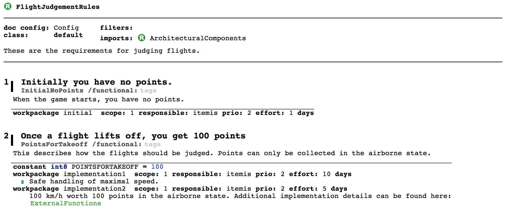
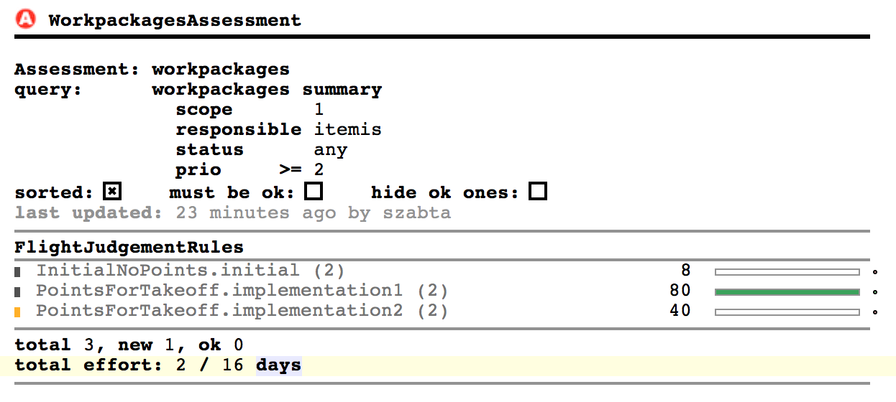
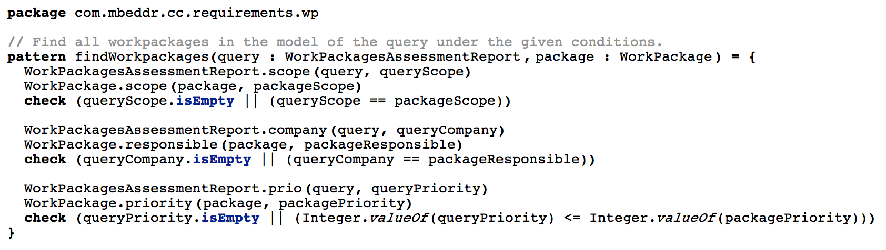

At this year's EclipseCon Europe Tamas Szabo had a talk about an integration project between MPS (and with this mbeddr) and the EMF-IncQuery (Eclipse) project.
During the summer we have started to work on the MPS-IncQuery project which aims to bring IncQuery’s powerful features to the world of the Meta Programming System (MPS).
The need for such an integration between the two projects has risen from the context of mbeddr; specifically the graph query engine of IncQuery could come handy for many use-cases in mbeddr.
This includes assessments on requirements documents (the demo was about this use case), computing scoping information in the IDE to figure out what variables/functions are visible at a given point in the C code or to specify constraints. Additionally, projectional editing brings a whole lot of other usages where live maintenance of graphical viewers is important and response time is crucial for larger diagrams.
The talk was rather technical, due to the complexity of many projects involved and because we tried to give details on as many of the following challenges as we could:
- We needed to map the Xtext language of the EMF-IncQuery project to the MPS’ world to be able to express the queries right in the workbench.
- Implementing the code generators for the queries in MPS.
- Providing a type-safe API with an extension to the Java base language of MPS. Here, new statements have been introduced in MPS’ Java language to access the queries that you have written previously.
- MPS itself has also been extended with the Query Explorer view, which aims to ease the debugging of queries right in the IDE. It works similarly to a database browser with the functionality to automatically refresh the contents of the view when the underlying models are changed.
- Implementing the backend which is responsible for handling the notifications coming from the observed MPS models. Here, we tried to reuse as much as possible from the already existing EMF-IncQuery backend. By the way EMF-IncQuery is moving towards the refactoring that all kinds of model representations could be plugged in by simply rewriting the modeling-paradigm-specific parts of the backend (to handle the notifications, for example).
We also gave a short live demo during the presentation which was centered around the requirements engineering language of mbeddr. This extension is used by many end users of mbeddr to write requirements documents and create various assessments on them. An assessment is simply a small query which reports certain program elements and constructs which satisfy given conditions. The following screenshots briefly describe the scenario:
-
The requirements document in mbeddr, where you can also see the workpackages with additional properties like responsible company, priority and scope.

-
The assessment container and the report inside it. The report has the same properties as the workpackages so that the user can specify the conditions and only those workpackages are listed in the result which meet these conditions.

Additionally you can see the query that we have written for the assessment. This establishes a connection between the WorkPackagesAssessmentReport and the WorkPackages. We access the interesting properties (company, priority, scope) of these concepts and use check expressions to specify the conditions when a tuple should appear in the match set of the query.

Finally here you can see parts of the Java code that is used in the language for the assessment. In MPS you can write constraints and behavior methods (basically derived features) for you language in the Java language of MPS. This language has been extended with additional constructs and types (in runtime) to access the matchers for the queries:
 Here, we create a matcher for our query and the scope of the query is specified as this.model which will evaluate to the model of the given assessment during “runtime”. Runtime is quite interesting here, because everything happens in the same JVM; query development, code generation and reloading of their classes and using the queries for your own instance model. After this we create a partial match where we set the first parameter to be the assessment and then we retrieve all the values for the second parameter which will be the workpackages found in the model.
Here, we create a matcher for our query and the scope of the query is specified as this.model which will evaluate to the model of the given assessment during “runtime”. Runtime is quite interesting here, because everything happens in the same JVM; query development, code generation and reloading of their classes and using the queries for your own instance model. After this we create a partial match where we set the first parameter to be the assessment and then we retrieve all the values for the second parameter which will be the workpackages found in the model.
This integration project faces a dual-licensing situation, where MPS is licensed under Apache 2.0, while all the other tools (EMF-IncQuery, MPS-IncQuery) are licensed under Eclipse EPL.
Resources:
- EclipseCon talk: https://eclipsecon.org/europe2014/session/mbeddr-meets-incquery-combining-best-features-two-modeling-worlds
- Slides: http://slideshare.net/IstvanRath/mbeddr-meets-incquer-combining-the-best-features-of-two-modeling-worlds
- EMF-IncQuery: https://incquery.net
- MPS-IncQuery (also includes a simple demo): https://github.com/szabta89/MPS-IncQuery
- Meta Programming System: https://jetbrains.com/mps/